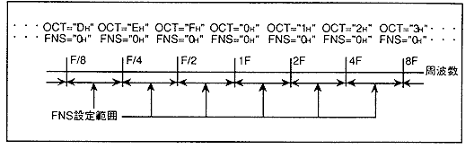
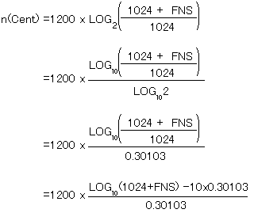
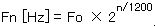

★HARDWARE Manual
★SCSPユーザーズマニュアル
★HARDWARE Manual
★SCSPユーザーズマニュアル
▲戻る
｜ 進む▼
SCSPユーザーズマニュアル/4.2 音源部レジスタ
■PITCHレジスタ
- OCT[3:0](Ｒ／Ｗ) ; OCTave
- "OCT"はメモリ内に格納されている波形データに対して、発音周波数をオクターブ上げるもしくは下げる機能をもつレジスタです。
- FNS[9:0](Ｒ／Ｗ) ; Frequency Number Switch
- "OCT"のオクターブ上下間の、更に細かな発音周波数設定機能を持つレジスタです。"FNS"値、"OCT"値がともに"0H"の場合、音程はサンプリングソースと一致します。"FNS"値および"OCT"値の関係を図4.45に示します。
図4.45 OCTとFNSの関係

- 実際のピッチ(ｎ)は、下に示される式で計算されます。

- この式によって得られる値は、単位セント(Cent)で表されます。
- ここで、セントについて説明をしておきます。
- １セントは、２1/1200＝1.000577789倍です。また、１オクターブは1200セントです。nセントの時は、元の周波数に対して２倍｛＝(1.000577789)n｝になります。
従って、基本となる周波数Fo[Hz]の音に対して、nセント高い音の周波数をFn[Hz]は、以下の式で求めることができます。

- この時のセント数に対する実周波数は、表4.12のようになります。
Ｐ［Cent］の時の"FNS"値は、下記の式で求めることができます。
- この式から、各パラメータを表4.13のように設定することにより、任意の周波数で出力することが可能です。
- 表4.13 FNS.OCTパラメータ表
| 音名 | NOTE番号 | PITCH[Cent] | FNS[9:0][DEC] | FNS[9:0][HEX] | OCT[3:0][HEX] |
| B3 | 59 | 1100 | 909.1 | 38D | F |
| C4 | 60 | 0 | 0.0 | 0 | 0 |
| C4# | 61 | 100 | 60.9 | 03D | 0 |
| D4 | 61 | 200 | 125.4 | 07D | 0 |
| D4# | 63 | 300 | 193.7 | 0C2 | 0 |
| E4 | 64 | 400 | 266.2 | 10A | 0 |
| F4 | 65 | 500 | 342.9 | 157 | 0 |
| F4# | 66 | 600 | 424.2 | 1A8 | 0 |
| G4 | 67 | 700 | 510.3 | 1FE | 0 |
| G4# | 68 | 800 | 601.5 | 25A | 0 |
| A4 | 69 | 900 | 698.2 | 2BA | 0 |
| A4# | 70 | 1000 | 800.6 | 321 | 0 |
| B4 | 71 | 1100 | 909.1 | 38D | 0 |
| C5 | 72 | 0 | 0.0 | 0 | 1 |
▲戻る
｜ 進む▼
★HARDWARE Manual
★SCSPユーザーズマニュアル
Copyright SEGA ENTERPRISES, LTD., 1997